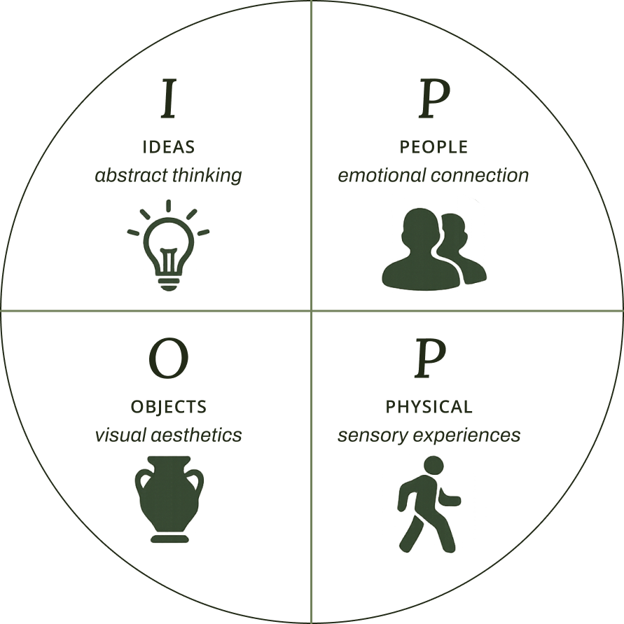
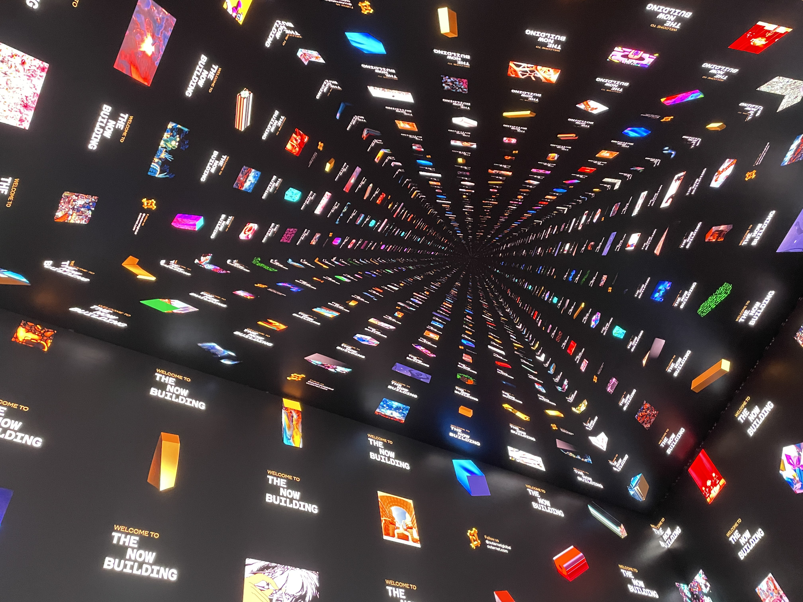
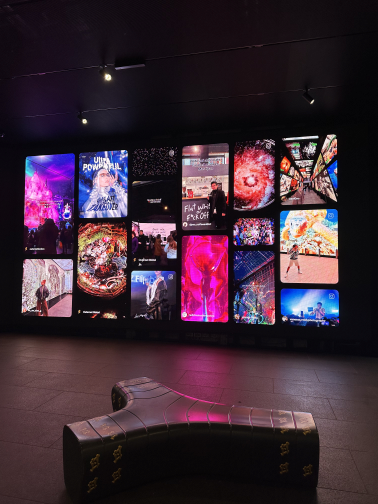

How might we create an exhibit that allows visitors to interact with the collected ecological data, the gardens, and with the museum itself?
Exhibit Research
Before we could design anything, we needed to understand what good exhibit design looked like in practice. We started with research. The Smithsonian's exhibit development framework gave us a useful structure. It centers on a single big idea, supported by key messages and critical questions that the exhibit should answer for visitors.
Alongside that, we came across the IPOP model, which argues that visitors come to museums with four different orientations: some are drawn to Ideas (abstract thinking), some to People (emotional connection), some to Objects (visual aesthetics), and some to Physical experiences (multisensory engagement). A well-designed exhibit has to work for all four types at once. That framing became a lens we kept returning to throughout the rest of the project.

IPOP ModelBut research only gets you so far. We needed to go out and see things.
Field Trips
The first trip was to Outernet London. It showed us what immersion could actually feel like when it was done well, and gave us an idea of what we wanted to aim for.


The second trip was back to the Natural History Museum itself, this time with a structured observation framework. Using the Robson framework as a guide, we catalogued interaction types (touch screen kiosks, physical controls, video screens, static text, animatronics, immersive rooms, physical 3D models, and audio recordings), visitor flow (mix of open exploration spaces and single-route exhibits), and demographics (large school groups, international couples and families) which helped confirm our target audience.
Natural History Museum — Observation VisitMore on how these observations fed into the specifics of our design in the next post.